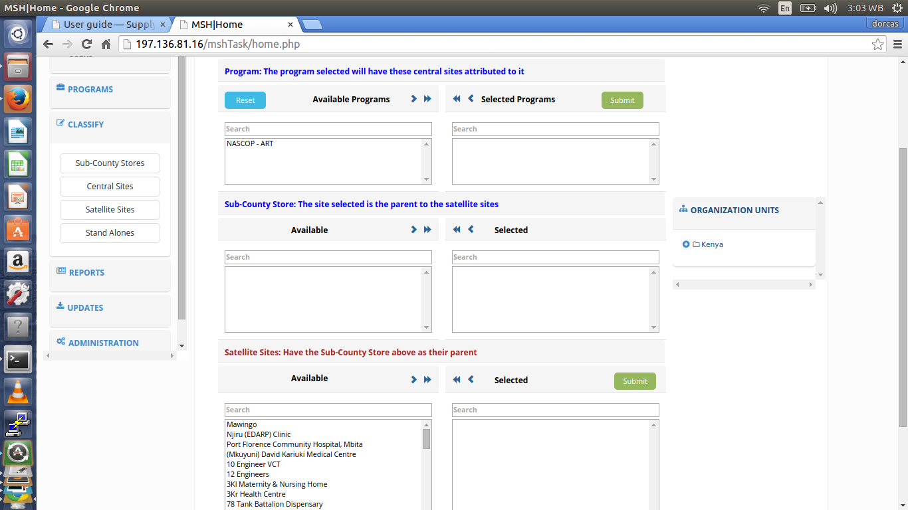
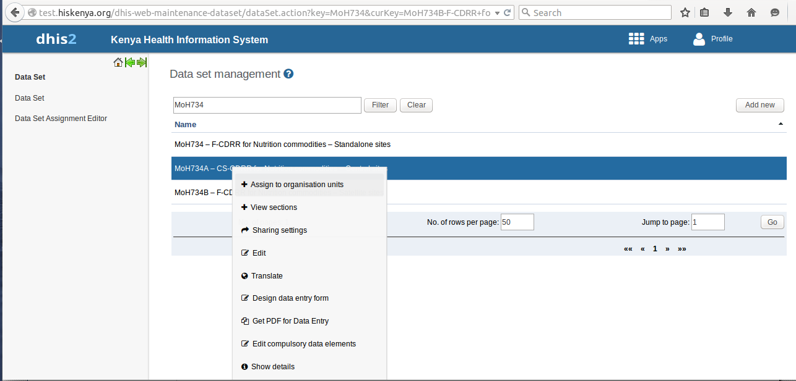
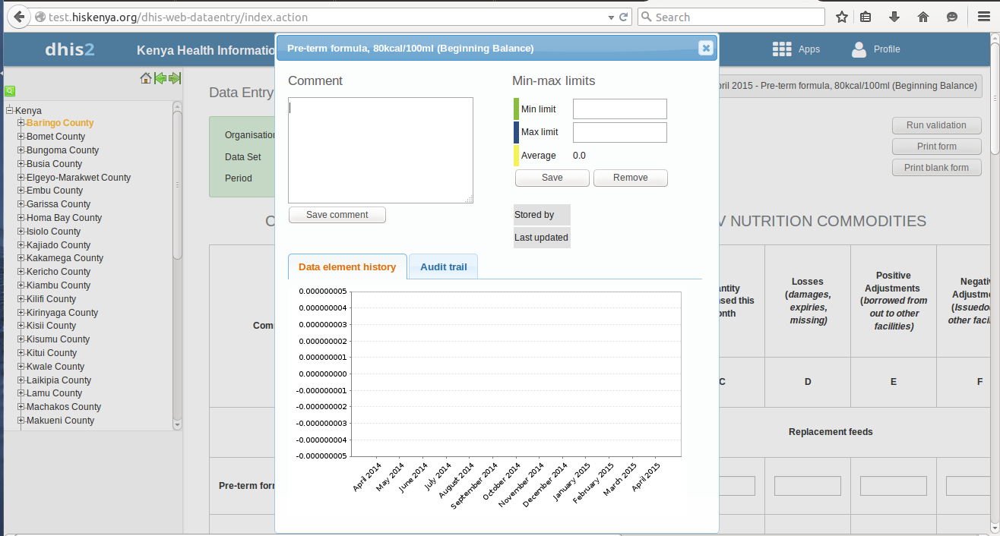
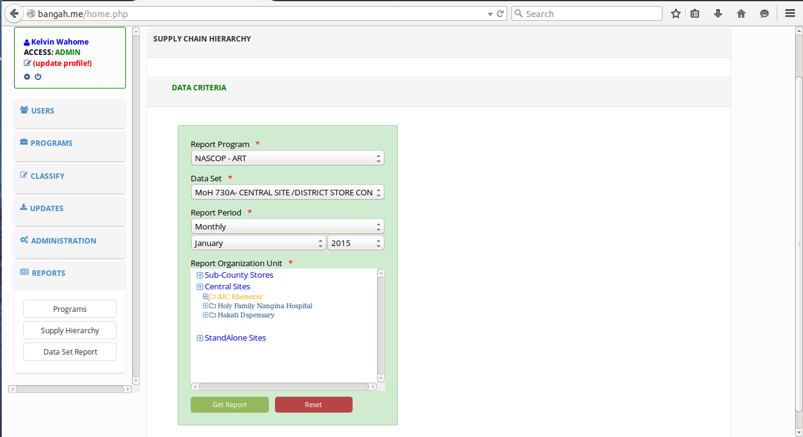

User guide¶
Introduction¶
Managing supply chains in support of HIV/AIDS services is a formidable challenge, especially in developing countries. Expanding programs for HIV/AIDS, TB and malaria require strong and supportive laboratory services that depend on the availability of the required commodities to perform critical tests, with most tests requiring multiple commodities to be available simultaneously. A correctly designed and run distribution system should keep the commodities in good condition, rationalize storage points, use transport as efficiently as possible, reduce theft and fraud and provide information for forecasting needs. This requires a good management of the system along with a simple but well-designed information system in place. The purpose of this project is to establish an hierarchy of the drugs supply chain that is not captured in DHIS2 for purposes of analysis and report generation.
As things stand, the Kenya instance of DHIS2 only establishes a hierarchy based on the country’s administrative units (national, county, sub-county, facility), which while important, does not capture the supply chain hierarchy for ART-related medicines & nutrition commodities.
This supply hierarchy needs to place facilities in their correct order matching the flow of both data/information and health commodities; hence clearly showing the reporting chain i.e. what facilities report to which others, and what facilities report to the national/central level (NASCOP), hence instituting a parent-child relationship.
Getting started¶
The purpose of this project is to establish the current hierarchy of the ART-related medicines and Nutrition & HIV commodities supply chain, which is not captured in DHIS2, for purposes of analysis and report generation.
System requirements¶
Chrome browser is recommended for the application. This is because of the javascript that is used in the app. Its able to load faster in chrome.
Login roles to DHIS2 are also required inorder to access the application.
Permissions¶
Login roles¶
There are various user roles according to the user who is logged in:
Users who can read data only i.e generating and viewing reports. They dont have permissions to edit anything in the application.
Users who can do both read and write. These users have the permission to generate reports and also post back to DHIS2.
The Admin who has all the permissions in the application. These include:
- Creation and management of programmes.
- Creation and management of users.
- Updating of basically everything in the application.
Launching the web application¶
This application is launched as a stand alone app, because it is not incorporated in DHIS2.
However, it pulls data from DHIS2.
In order to launch the app, you need to type the url
This will direct you to the login page where you can login.
Application layout¶
Header¶
The header of the application can be seen on the login page as ‘Supply Pipeline Hierarchy Tool’.
Below the header is a short welcome message “Welcome to the Kenya Health Information Systems” and a Logo.
Side bar¶
At the leftside bar, there is a list of links.
These links appear differently according to the user who is logged in.
The Admin can view:
Users¶
Here, the admin can create and manage different types of users.
- Go to the users tab at the leftside bar of the app.
- Click on ‘create’ to create a new user. Fill in details in the form that appears on the page and save.
- You can also add a new user from DHIS2 by clicking on ‘add form DHIS2’ in the dropdown list.
- To edit the roles of a user, click on the ‘edit’ in the dropdown. In the window that appears, click on edit at the each user in order to edit.
- You can also click on the ‘administration’ to deactivate an account or update the details of a user.
Programs¶
Here, you can create and manage programs.
- Click on the programs tab on the leftside bar, on the dropdown that appears, click on the ‘create’ to create a new program.
- On the window that appears, fill in the details of the program you want to create i.e the program name and the datasets for the program.

You can also click on the ‘edit’ in the dropdown to change the details of a program or ‘administration’ to delete a certain program.
Classify¶
Here you can classify facilities according to the hierarchy, either as sub-county stores, central stores, satellite sites or stand alone sites.
- Click on the classify tab on the leftside bar, on the dropdown that appears, select either sub-county stores,central sites, satellite sites or stand alones.
- Once you click ‘sub-county stores’, a new window will be loaded containing a form where you will;
- Select the program you want to classify and submit.
- Select the sub-county stores that the program will be attributed to and submit.
- When you select the ‘central site’ from the dropdown;
- select the program you want to classify and submit.
- Below that, select the central store you want the program to be attributed to and then submit.
- When you select the ‘satellite site’ from the dropdown;
- Here, you can either classify the satellite as a sub-county store satellite or a central site satellite. Just click on any of the links according to the classification you want.
For example, if you select the sub-county store satellite link,
- Select the program you want to classify and click submit.
- Below it, select the sub-county store (the parent to the satellite site) and submit.
- Below that, select the satellite sites that will have the sub-county store selected above as their parent and then submit.

The same procedure applies when you select the central site satellite link.
In the dropdown, when you click on ‘Stand Alones’, you will just follow the same procedure for classification.
Note
This establishes a hierarchy of the supply chain for report generation.
Updates¶
There is need to query DHIS2 for newly updated organization units, facilities and datasets.
- click on the ‘updates’ link in the leftside bar of the application.
- From the dropdown that appears below the link, select either counties,sub-counties, facilities or datasets inorder to update them respectively.
Administration¶
Here, the admin can delete a supply hierarchy from the system.
He/She can also restore deleted data since its not deleted permanently.
Reports¶
This link is used to query for various reports including program reports, supply hierarchy reports and dataset reports
Here is a screenshot of the application layout as viewed by the admin:
The user with the role ‘Read’ can only view the reports link on the leftside bar.
Here is the app layout as viewed by the ‘Read’ user:
The user with the Write access view the Reports link on the leftside bar and can also post back to DHIS2.
Here is the app layout as viewed by the ‘Write’ user:
Tasks¶
Assigning a dataset to organization units¶
This is done in the DHIS2 test site.
In DHIS2 apps, select the data sets app.
Type the name of the dataset you want to assign at the top and click on the filter button.
The dataset will be filtered and displayed on the screen.
Click on it, you will see a drop down appear.
Select the first option, (assign to organisation units).

- Select the org units you want to assign the dataset to and then click on the save button at the bottom of the page.

Note
Please note that you must be logged into DHIS2
Accessing the data entry form¶
- To access the data entry window, click on the apps tab at the top bar. A drop down will appear listing all the apps in DHIS2.
- Select the Data Entry option.
- Locate the organisation unit you want to register data for in the tree menu to the left. Expand and close the branches by clicking on the +/- symbols. You can also search for the orgunit at the green symbol above the tree, but you need to type the full name inorder to match the orgunit.
- Select a dataset from the drop down list of datasets which are available for the orgunit which you have selected.
- Select the period you want to register data for. The available periods are determined by period type of the dataset. You can also jump a year back or forward by clicking the tabs: Prev year and Next year respectively.
- By now you should be able to see the data entry form.
Entering data for satellite sites¶
- Having selected the correct orgunit,dataset and period, Start entering data by clicking inside the first field and type in the value.
Move to the next field by clicking the tab button. You can also move back by clicking shift+tab.
A green field will indicate that the values are saved in the system.
- If you type in an invalid value, you will get a pop-up that explains the problem and the field will be coloured yellow (not saved) until you have corrected the value.
- If you have defined a min/max range for the field (data element+organisation unit combination) a pop-up message will notify you when the value is out of range, and the value will remain unsaved until you have changed the value.
- If a field is disabled (grey in color) it means that the field should not be filled. The cursor will automatically jump to the next open field.
- You can view the data history window by doubleclicking on any input field. This shows you the last 12 values entered for the input field in a bar chart.
This window also shows the min and max range and allows for adjusting the range for the specific organisation unit and data element combination.

Collection of aggregated data for the satellite sites¶
- In the app (Supply Pipeline Hierarchy Tool), on the leftside bar, click on the Reports tab. You will see a dropdown appear below the tab.
- Click on the Datasets report, this will direct you to another page where you will have to select;
- Type of program you want to get the report for.
- The name of the dataset.
- The reporting period for the report. If monthly, select the month for reporting.
- The reporting orgunit.
- Click on the Get report button at the bottom of the form.

- This will get the aggregated data for the satellite sites which are under the central site you selected earlier.
Update of central site data¶
- Once the data has been aggregated in the report, you can update by posting it back to DHIS2.
- This can be done by clicking on the post data button at the top of the form.
Sites Analytics¶
This functionality is basically for displaying the list of facilities by program and by type.
- Inorder to access this functionality;
- Go to the Reports link on the leftside bar of the application and click on it.
- In the dropdown that appears, select the Sites Analytics option. A new window will be loaded.
- In the form that appears on the page, select the program that you want to get the report on. For example, NASCOP- ART.
- Select the type of report you want to get, for example, list of ordering points, distribution of ordering points by county, list of service points.
- Select the Report Organization Unit to report on.
- click on the get report button at the bottom of the form.
This will load for you the report which you want according to the detils you entered in the form.
Getting ART Reports¶
This functionality is for getting all types of reports that are limited to ART program in DHIS2.
In order to access this;
- Go to Reports link on the leftside bar of the application and click on it.
- In the dropdown that appears, select ART Reports.
- A new window will be loaded, fill in the details in the form that appears.
- In the form, Select the type of report that you want to get.
- Select the period for reporting(monthly) and then select the organization unit.
- Then click on the Get report button at the bottom.
This will load for you the report according to the details which you entered in the form.
Other procedures¶
Get reports¶
Apart from generating aggregated data for satellite sites (dataset reports),one can also get reports on programs and supply chain hierarchy.
Generating a supply hierarchy report¶
- From the leftside bar of the application, click on the reports link.
- From the dropdown that appears below it, select Supply Hierarchy.
- A window will loaded displaying a program and the various site classifications.

Generating a program report¶
- From the leftside bar of the application, click on the reports link.
- From the dropdown that appears below it, select ‘Program’.
- A window will be loaded showing programs and the different types of sites which the progrm is assigned to(sub-county stores, central sites, satellite sites, and stand alone sites).
You will also be able to see the various datasets that are assigned to a certain program(s).
Trouble shooting¶
Restore of deleted data¶
One can retore deleted data by:
- Click on the administration link on the leftside bar of the app.
- A dropdown will appear, click on the first option i.e Supply Hierarchy inorder to delete a supply hierarchy.
- Click on the second option inorder to restore deleted data.
A window will be loaded showing all the deleted data.
- If you want to retrieve the data, click on the restore button at the end of the specific row.
- If you want to delete permanently, click on the ‘delete permanently’ button at the end of the row.